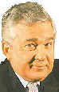
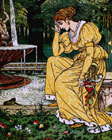

- turks -
 |
The Counter-Reformation had come to Hungary too, but here it proceeded by open debate, argument and a flood of tracts (by 1600 well over five hundred had been published). ) Mention must also be made of Count Nicholas Zrinyi (the Younger, to distinguish him from his great-grandfather), author of important works on political and military matters, as well as poetry. After all, only Hungary stood between the Turks and the Empire; moreover, his brother the Emperor Charles V was at war with Francis I of France, who had allied himself with the Turks despite sporting the title Most Christian King. Initially resistance to the Turkish advance had also been impeded by the division of loyalties between two Kings. However, within two years he became a client of the Turks, and was then left in possession of Buda and the centre of the country until his death in 1541. |
|
. The Complete Factual History of Vampires Vlad Dracula Timeline Classic Vampire Literature Historical Vampires The Library Dracula's Birth 1430-31 Vlad Dracula was born. 1443 Dracula, now 12 and his younger brother Radu The Handsome become hostages of the Turks to guarantee the loyalty of their father who is put back on the throne of Wallanchia. 1446 Turks take Greece 1447 Dracul (beheaded) and his son Mircea (buried alive) get assassinated for complicity with the Turks. Dracula's First Brief Rein October- November 1448 Vlad Dracula, at the age of 18, obtains the Wallachian throne briefly for the first time 1453 The fall of Constantinople. |
He briefly regained the throne in 1475 after years of "imprisonment" in Hungary, but finally met his end in 1476 by an assassin's hand. . The Turks were defeated and in their retreat Dracul was swept from the throne. He regained it in 1443 with the help of the Turks, with whom he had signed a new alliance. The sultan doubted Dracul's loyalty, though, and demanded he leave two of his sons, Vlad and Radu in the sultan's court.
|  |
|  |
1447 Vlad II and his eldest son Mircea (who is buried alive) are murdered, possibly by Hungarian assassins. Hungary names Vlad II's successor to the Wallachian throne. 1448 The Turks do not like having a Hungarian puppet ruling Wallachia, so they decide to free Dracula and give him an army. Dracula seizes the Wallachian throne, but rules for only two months before fleeing to Moldavia, which was ruled by his cousin, Prince Bogdan. Advancing Hungarian forces may have forced him into exile; it is also possible that he did not want to be a puppet of the Turks after his imprisonment. |
also look at: http://www.bbc.co.uk/weather/